A tree looks at the dataset and all the features and tries different questions out to determine proper splitting criteria. It evaluates how well each question splits the data using Gini or entropy, and chooses the question that splits the data best. For example, if a person was deciding whether or not to put a jacket on before leaving the house, the first question in the decision tree might be "is the temperature above 60 degrees?" If it's not above 60 degrees, then that person decides to put on a jacket. If it is above 60 degrees, the next question might be, "is the temperature expected to drop below 60 degrees in the next 2 hours?" An example of a question that provides low information gain might be, "is the car low on gas?" This presumably has no impact on the need for a jacket, so a decision tree would calculate that this specific question has low information gain. Simply put, the tree is followed from top to bottom, asking questions until it gets to the bottom leaf node, in which the majority class for the rest of those observations is assigned to the current one.
Fraud detection is a huge real-world example for decision trees. Whether that's in transaction fraud or bank application fraud, a tree is extremely useful for determining if the circumstances surrounding an event align with other known fraudulent activity. In this case, recall is really important since there's very little true fraud in comparison to the rest of the transactions that occur every day. Precision is also important because if a decision tree simply marks everything as fraud, then a lot of people are going to have to deal with the consequences of false positives, such as card declinations and frozen accounts. Another good example of decision trees in action is medical triage. Medical professionals go through a series of questions to determine the seriousness of injuries and illnesses, to help understand which patients need to be treated first and how urgent each ailment is.
Gini looks at the makeup of a box and determines how mixed the class labels are. When a box with two classes is perfectly mixed, the value is 0.5. When it's completely pure, the value is 0. Entropy is a way of calculating how surprising the color of a marble pulled out of a bag would be. If the bag is made up of all blue marbles, then it's not surprising to pull a blue marble. If it's 50/50 red and blue, every draw is a toss-up. In the first case, the bag is pure, so the entropy is 0, just like in Gini. In the second case, however, the entropy is 1, unlike Gini's 0.5. Information gain takes the Gini score before the split and subtracts the weighted average of the Gini scores after the split.
Say out of 100 nights, 80 of them are classified as normal-oxygen nights and 20 are low-oxygen nights. The initial Gini score would be calculated as 1 − ((80/100)² + (20/100)²) = 0.32. The decision tree might ask a question like "Is minimum heart rate less than or equal to 53.5?" Say this splits the data into two boxes of 50 nights each. The first box contains 48 normal and 2 low-oxygen nights, which puts its Gini score at 1 − ((48/50)² + (2/50)²) = 0.0768. The second box contains 32 normal and 18 low-oxygen nights, which puts its Gini score at 1 − ((32/50)² + (18/50)²) = 0.4608. Since each box holds half of the nights, each score is given a weight of 0.5, and the two are added together to get a weighted average of 0.2688. That is then subtracted from the original Gini score to determine the information gain: 0.32 − 0.2688 = 0.0512. The model then tests other candidate splits and follows the same pattern to determine the information gain for each one. At the end, it chooses the splitting criterion that provides the largest information gain value. Then it moves down to determine the next level's splitting criterion, until it reaches the maximum depth of the tree, a box becomes pure, or a stopping rule such as minimum leaf size prevents further splits.
When working with continuous numbers, the possibilities are endless. There are an infinite number of numbers between 0 and 1. Say the tree is looking to split the data based on minimum heart rate. In the above example, the split was made at 53.5. The tree could theoretically try to split hairs at every decimal place: 53.6, 53.7, 53.71, and so on. This could result in infinite trees. Also, the more features in a dataset, the more possible combinations of features exist. Checking all those combinations causes the possibilities of each tree to grow exponentially.
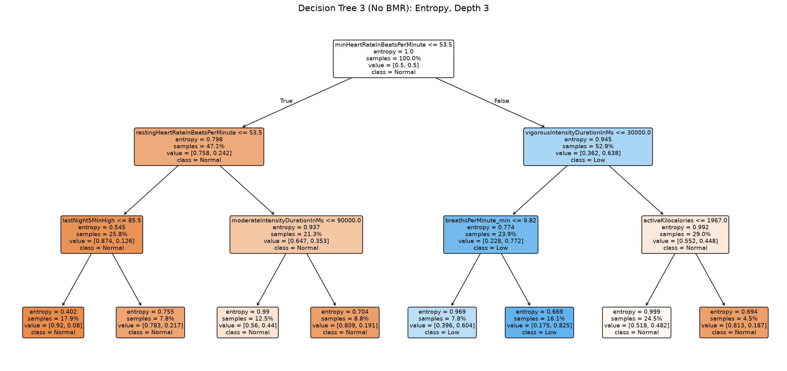
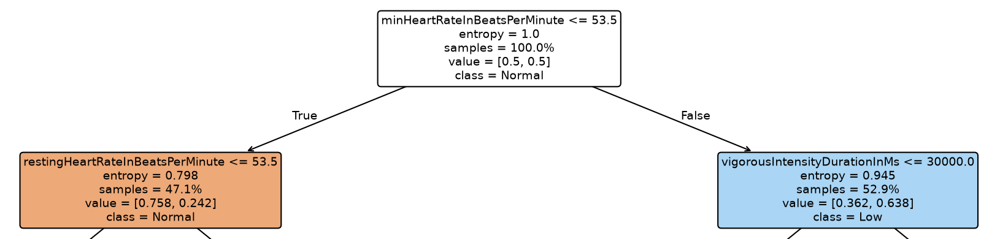
The Decision Tree dataset is based on a completely different label than Naive Bayes. While Naive Bayes was focused on normal vs. low-recovery nights, Decision Trees focused on normal vs. low-oxygen nights. Because the low-oxygen label was determined using pulse-ox data (SpO2), and only a subset of the original data contained pulse-ox data, the number of observations shrank from 18,728 nights in Naive Bayes down to 8,729 nights. Naive Bayes contained all 98 participants, whereas Decision Trees contained 47.
For the labeling of the Decision Tree data, the average SpO2 score for the entire sample population was recorded. Then, for each night, that night's SpO2 was compared to that population average, and a z-score was calculated for that specific night. If that z-score fell one standard deviation or more below the average (z ≤ −1), that specific observation was labeled as low-oxygen.
This was done because of the implications of how low HRV differs from low oxygen. HRV and what is normal varies widely from person to person. There's no recognized standard for low or high HRV, and it is highly dependent on the individual, since HRV tends to be higher in more physically fit individuals. On the flip side, pulse-ox data does have what's considered to be low in the medical field. However, modern-day wearables like Garmin devices, even though advanced, are still not up to par with clinical-grade devices and tend to read low [1]. This is why a medical threshold would not be an adequate comparison tool for this dataset. Instead of a globally accepted value, and in an attempt to meet project goals and evaluate across this subset of the veteran community, the average SpO2 of this subset was calculated and used as the baseline for determining a z-score for each observation.
Decision Trees, like Naive Bayes, is also a supervised learning model, meaning the model learns from examples where the answer is already known. Just like in the Naive Bayes tab, if a kid learning to do addition never knew if the answers they were generating were correct, they would never have confidence in their understanding. Likewise, models like Decision Trees need that answer key to solidify the rules they come up with and to provide confidence in their predictions moving forward. For the train/test split, the data was split among participants so that nobody was in both data sets, because every person has a unique signature in their individual metrics. By having a person's nights in both, the model could get insight into the test's answer key. Using StratifiedGroupKFold, the participants were separated into groupings close to an 80/20 split. This time, however, an equal share of labeled data was not achievable. Since a majority of the low-oxygen nights were concentrated in a few participants, splitting participants in a way that kept the share of low-oxygen nights equal was not possible. For example, say there are 10 bags, each with a mix of red and blue marbles. Next, say that 7 of the bags are mostly pure blue, and the three remaining bags are 60%, 50%, and 30% red. When the ten bags are split 80/20 (8 bags for training and 2 for testing), the share of red marbles in each set depends heavily on where those three bags land, so there would be no way to get the training set and the testing set to have a similar percentage of red marbles. A random state of 42 was used so that the experiment was reproducible and did not produce a different split every time it was run. The training set contains 7,029 nights from 35 people, with 15.7% of nights labeled low oxygen, and the testing set contains 1,700 nights from 12 people, with 12.5% of nights labeled low oxygen.
Decision trees are not affected by correlation or scaling. Since each question is asked within its own feature, scaling wouldn't change the outcome of the question, only how the question is asked. Secondly, where Naive Bayes double counted correlated columns as further evidence toward a classification, in a decision tree, columns are evaluated one at a time at each split, so if two columns carry the same information, the tree simply uses one and the other goes mostly unused.
Plots of the trees were made after all three trees were calculated and run. This turned out to be a bit of an efficiency mistake. After looking at the plots, it was clear that the root of the tree was splitting based on basal metabolic rate (BMR). This variable is unique to an individual and rarely changes. Essentially, the tree was splitting the data primarily on a person's unique signature, which said nothing about the night itself. After this oversight was realized, the decision was made to remove BMR completely from the training and testing data sets. The original data and trees were kept as a teaching point instead of going back and removing BMR at the beginning. This allows any future observers to understand the complete thought process behind the decisions that were made. After BMR was removed, the tree began primarily splitting on minimum heart rate instead.
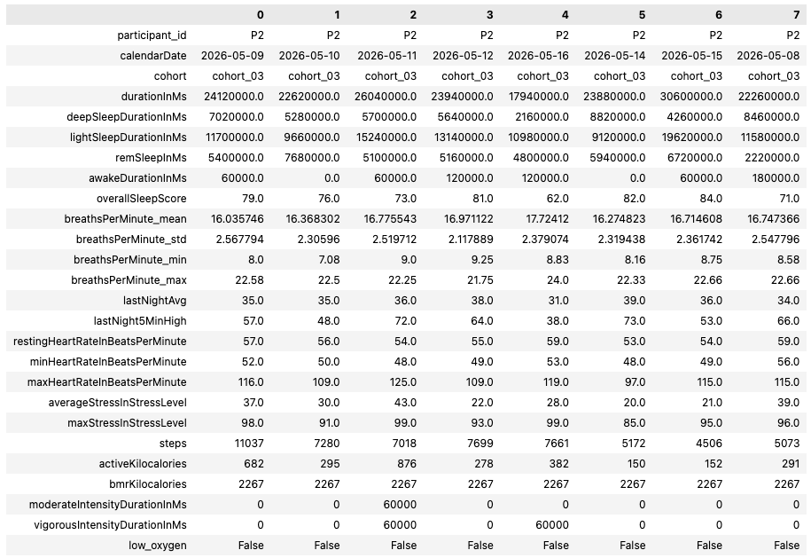
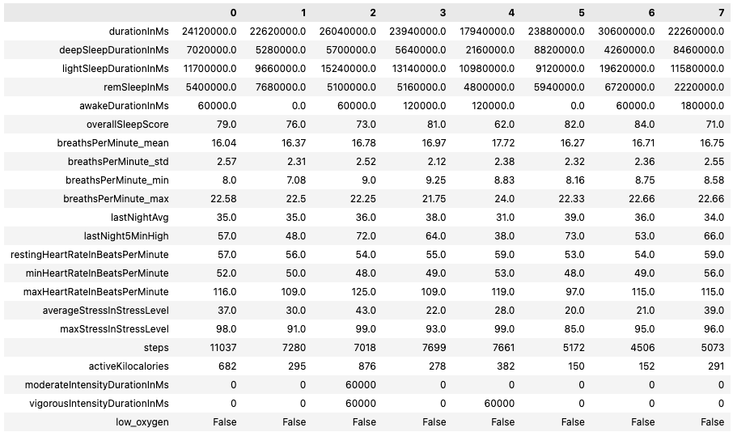
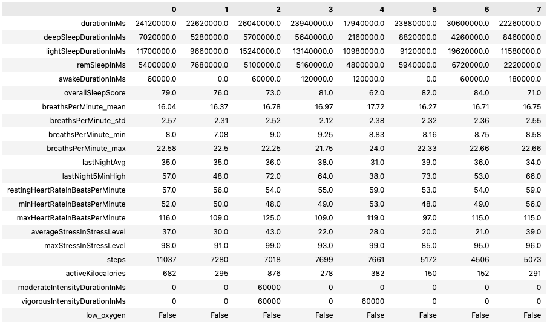
The code for this section was written in Python using pandas, NumPy, matplotlib, and scikit-learn (sklearn). Pandas and NumPy were used primarily for dataframe management, matplotlib and sklearn's plot_tree were used for plotting figures, and the rest of sklearn was used for the participant-level train/test split, tree parameter optimization, tree development, and metric reporting.
One of the first big observations, and another reason the original dataset (with BMR) was kept, is that all three tree models were below the balanced accuracy baseline of 0.50 (0.43 to 0.48). This was interesting because, using the GridSearchCV function, the best mean score in the practice rounds on the training data was about 0.65. However, once the BMR feature was dropped, things improved greatly. Without BMR, Tree 1 (entropy, depth = 5, min_samples_leaf = 500) rose to a balanced accuracy of 0.67, beating the 0.50 coin flip. Out of 213 low-oxygen nights, it was able to identify 162 of them correctly, for a 76% recall score. Unfortunately, only about 1 in 5 of all its flags were accurate, for a 21% precision score, raising 626 false alarms. Additionally, in Trees 2 and 3 without BMR (depth = 3, Gini and entropy), the balanced accuracy was better than the baseline, but only marginally, at 0.56 and 0.58. This implies that each final box needed at least 500 samples taken from many different participants before the rules it developed were capable of reflecting something specific about the night rather than characteristics of the person.
Looking at the importance metrics, minimum heart rate led the group with 0.48, followed by vigorous exercise at 0.24 and resting heart rate at 0.08. This means that minimum heart rate and vigorous exercise together accounted for 72% of Tree 1's feature importance. Minimum heart rate, or anything heart-rate related, changes daily and can be affected by multiple things: physical fitness levels, alcohol consumption, sleep debt, and so on. This feature can also vary widely between individuals. Because this feature is both a characteristic of the person and a characteristic of a given night, its job as the main separating factor is less reliable for telling one night apart from another. Some of that importance is still likely to reflect differences between people, not just nights.
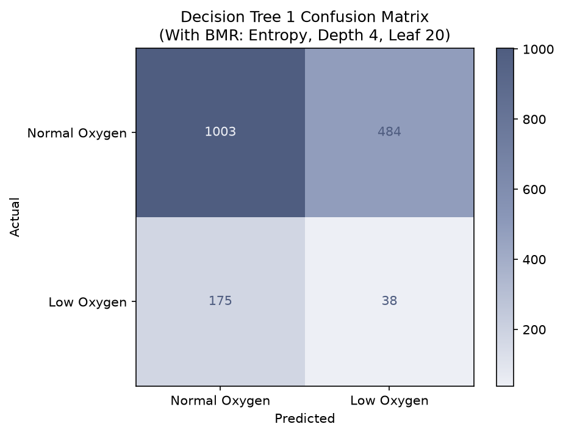
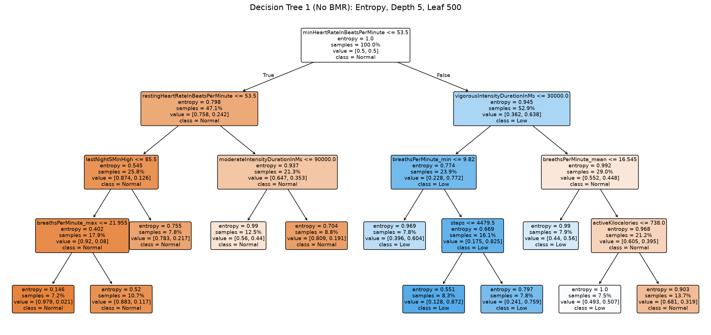
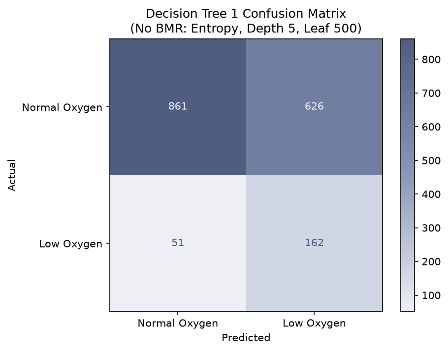
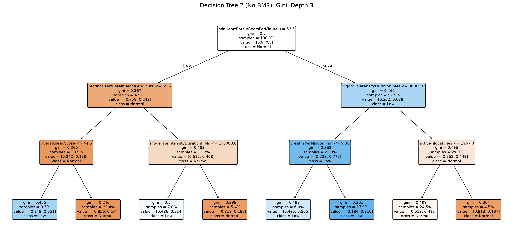
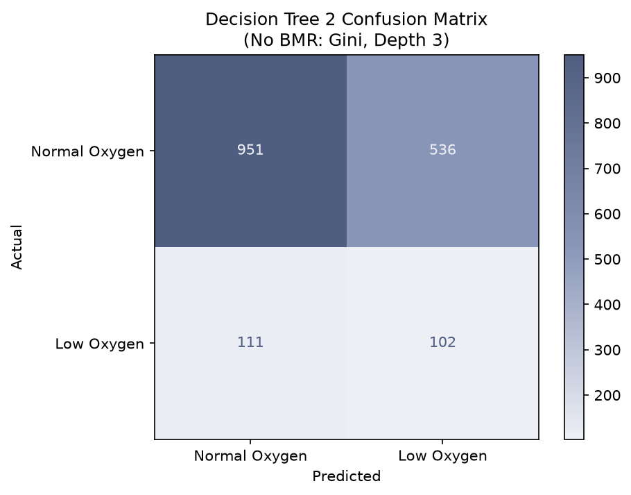
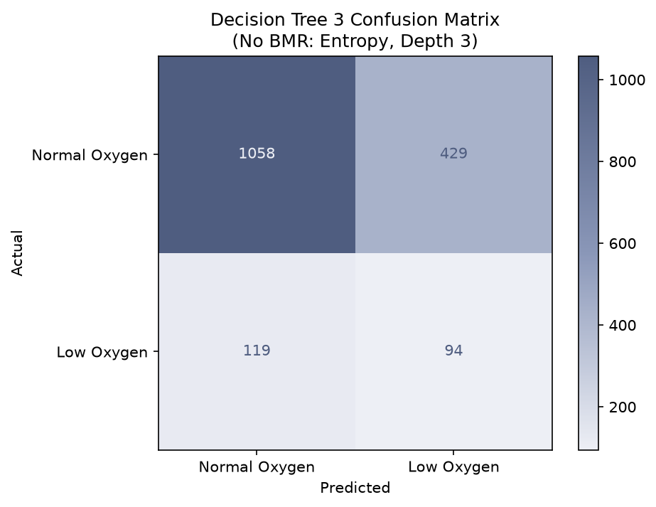
It is possible for these watches to spot low-oxygen nights, but not with any reliability on a consistent basis. The best tree caught most of the low-oxygen nights, but with many false alarms along the way. When a tree is trying to make decisions based on unique features of an individual, it does a bad job comparing the nights themselves to other people's nights, and it gets laser-focused on the type of individual as a predictive measure. Once that feature was removed, the model was able to focus more on night-specific characteristics. A tool like this could be used to inform individuals of a pattern spotted in their data and prompt a closer look or a conversation, but it should not be used as a diagnostic tool or to make any definitive claims, since non-clinical devices were used to estimate the low-oxygen labels.
References
- P. Weinrauch, "Accuracy of pulse oximetry using the Garmin fēnix® 6 Pro watch," The Journal of High Threat and Austere Medicine, vol. 5, no. 2, pp. 3–6, 2023. doi: 10.33235/JHTAM.5.2.3-6.